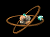

Dungeness B, une centrale nucléaire du Kent, a failli fermer le mois dernier parce qu'un phoque gris s'était faufilé dans une cuve de refroidissement L'animal (baptisé Nuisance) a finalement été hissé au moyen d'une grue sur une plate-forme introduite dans la cuve en béton. Nuisance était resté bloqué pendant neuf jours : si l'opération avait échoué, il aurait fallu vidanger la cuve et fermer le réacteur - l'opération aurait coûté 125 000 livres [plus de 1 million de FF] par jour.
Depuis des années, les animaux mènent une véritable guérilla contre les centrales. Des clams ont mis hors service la centrale nucléaire de Russelville, en Arkansas, et des méduses ont provoqué une panne de onze jours dans celle de St Lucie, en Floride. Il y a un an, une invasion d'éphémères s'est abattue sur la centrale électrique de Toledo, dans l'Ohio, privant de courant 290 000 foyers et entreprises. Les insectes ont grillé par millions. En décembre 1995, un ringtail (mammifère de la taille d'un chat, cousin du raton laveur) a momentanément mis hors service l'un des réacteurs de la centrale nucléaire de Palo Verde, dans l'Arizona. L'intrus avait provoqué un court-circuit dans un transformateur externe. Il avait bondi par-dessus une clôture de plus de 3 mètres de haut et était mort électrocuté.
En avril 1993, un corbeau a causé l'arrêt complet d'une turbine de la centrale électrique d'Igna-lima, en Lituanie, en se posant sur un pylône de 330 kilowatts avec un morceau de câble électrique dans le bec, court-circuitant ainsi le système. Le corbeau a péri carbonisé. Le 24 janvier 1996, c'est un épervier qui a plongé tout le Sénégal dans l'obscurité pendant quatre heures. Un oiseau était entré en collision avec une ligne à haute tension, qui a fait court-circuit avec une autre. L'incident s'est produit à la centrale du cap de Biches, qui produit environ 80 % de l'électricité du pays. Le mécanisme de protection a mis hors circuit les deux autres centrales du Sénégal.
Dans cette guérilla contre l'humanité, les écureuils occupent une place à part La deuxième plus grande Bourse des Etats-Unis a cessé de fonctionner pendant trente-quatre minutes le 1er août 1994 quand un écureuil a grignoté des câbles électriques à Trumbull, dans le Connecticut, provoquant la rupture du système électronique Nasdaq. L'été dernier, des écureuils ont causé une panne totale dans un village du Derbyshire, ainsi que dans une grande partie de Stroud, dans le Gloucestershire. En septembre 1996, un autre écureuil a réussi à détruire le sommet d'un pylône à Whitecross, près de Linlithgow, en Ecosse, privant d'électricité 800 foyers et déclenchant un incendie dans un champ. Tous ces militants ont sacrifié leur vie dans ces opérations.
Mais le sabotage n'entraîne pas obligatoirement la mort du saboteur. En avril 1994, un rapace a plongé dans le noir 9 000 foyers à Newbridge, dans le Gwent, en laissant tomber un agnelet de 5 jours sur deux câbles d'une sous-station électrique. Le lancement de la navette spatiale Discovery a été retardé de plus de un mois en 1995 quand la NASA a découvert que deux piverts avaient creusé 135 trous dans la mousse isolante du réservoir de carburant Les techniciens ont dû retirer la navette du pas de tir afin de pouvoir colmater les orifices. Coût: environ 100 000 dollars. Pour clore cette liste de sabotages, citons l'exploit d'une mouette qui, en mai 1989, a largué une déjection sur l’oeil électronique d'un nouveau pont tournant à Yarmouth, sur l'île de Wight. Résultat : huit heures d'embouteillages.

Paul Sieveking - The Sunday Telegraph - Londres
Traduction : Courrier International (n°345, 12 juin 1997, p.50)
Me laisser un mot
Retour à la page humour.
Retour à la page principale.